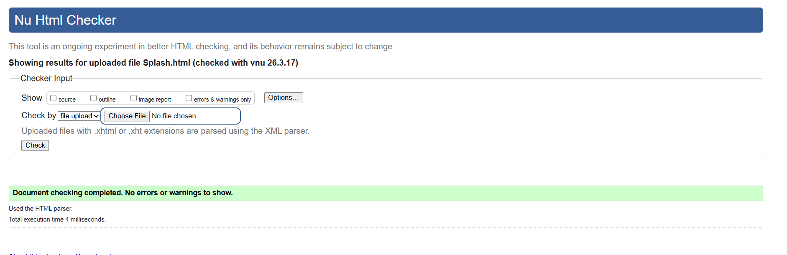
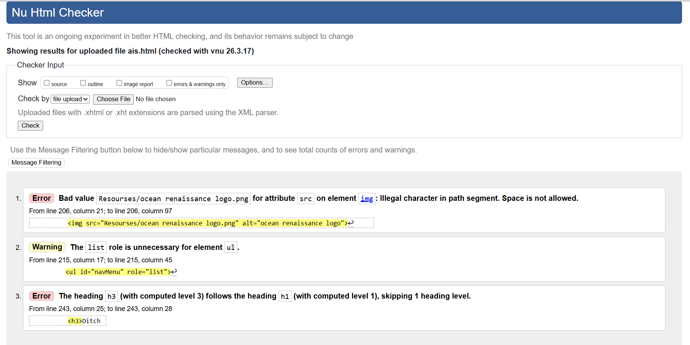
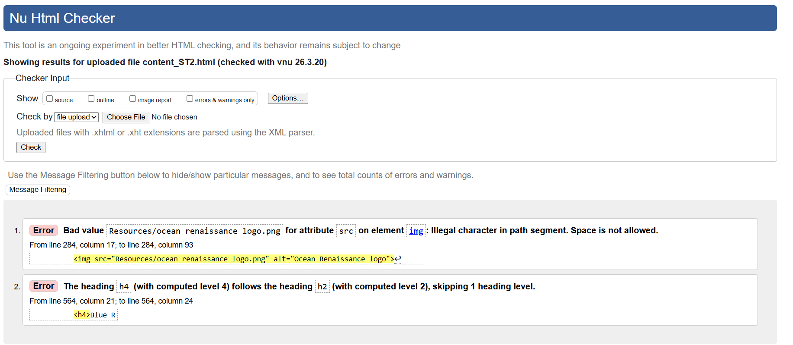

Splash Screen - Validation Report
I validated the splash screen using the W3C Markup Validation Service. It came back with no errors which I was happy about. There was one warning saying that a space was expected at the meta refresh tag but I looked into it and it seems that this is a common warning for meta refresh tags and it doesn't affect the functionality of the page but I decided to fix it anyway.

Back to Page Editor
Action Impact Simulator - Validation Report
I validated the AIS page using the W3C Markup Validation Service and it gave some warnings, I fixed what was neccassary. A warning was given about the heading structure saying that I added a H1 tag and a H3 tag without a H2 inbetween which is true but I decided to keep it as it is because the H1 tag is only used for the main heading of the page and the H3 tag is used for the subheadings of the references section so it made more sense to me to keep it this way rather than adding an unnecessary H2 tag just to satisfy the validator.

Back to Page Editor
Content Page - Validation Report
I validated the content page using the W3C Markup Validation Service. The validator came back with a few issues. I fixed the ones that were actual mistakes a typo in a CSS gap value where I had written 0.9srem instead of 0.9rem. The other two issues a space in the logo image filename and an h4 heading in the footer following an h2 I chose to leave as they were since they did not break anything on the page and fixing them would have required changes across multiple files shared with the rest of the team.
